In this Documentation you are gonna learn how to Minesweeper:
Input:
With the Input you can customize the dimensions and difficulty of Minesweeper:
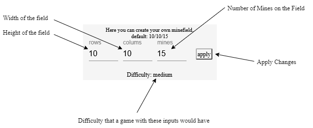
How to Play:
This is how the default minefield looks like with unrevealed tiles:
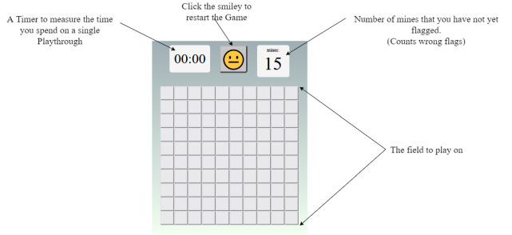
You reveal a tile with
How to win:
You need to reveal all the tiles that dont have a bomb:
You can encounter:
| A bomb | 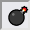 |
Means Gameover
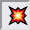
|
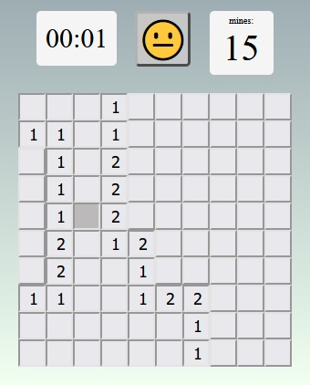 |
| Nothing | Will reveal all other empty tiles around it and their adjacents. Like this → | ||
| A number |  |
Shows number of adjacent mines around it. Some examples to demonstrate that ↓ |
|
2 adj mines: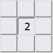fully revealed: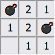example with 3: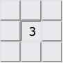revealed: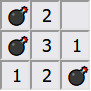 |
|||
| Use the numbers to figure out where the bombs are and step around them or flag them. |
|
A win could look like this:
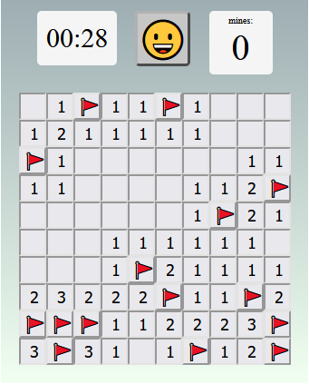
|
| Additionally a win alert will pop up and congratulate you. |
Features that make life easier:
When you suspect that a tile has a bomb, you can put a flag
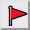
on a tile with
They make it impossible for you to reveal it.
But you can always remove it again with
You can win without flags but they will help you remember and with the next feature:
A more advanced feature is that you can click on a number.
If the amount of adjacent flats is the same as the number, then it will on click reveal all other adjacent
tiles.
But be careful. If your flag is wrong, then it might reveal a bomb and you loose.
For you to be able to fully analyse your exploding,
there will be green and red backgrounds that indicate wether or not a flag you placed was on a bomb.
Those green bombs you discovered are unexplodable.
But if you like, you can still explode all the other mines. For fun.
.